My second project in ENGR11A introduced me to some of the functions of the modeling software behind 3D prints that are publicly available online, thus illuminating some more of the 3D print designing and prototyping process. The sites of interest now are Tinkercad and Autodesk Fusion 360 - two extremely different approaches to model shapes of varying complexity. This process began not only with signing in to and downloading, but also with perusal of online tutorials for a significant amount of time, given their more complex interfaces.
The Pencil: Tinkercad
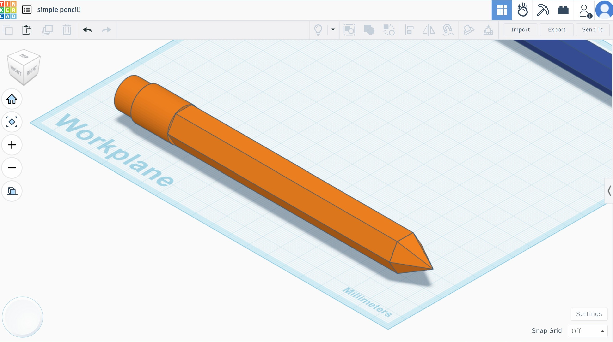 The shape of a pencil, the sum of basic polygons in Tinkercad's library. Given this interface's lack of flexibility, some creativity was required in this design.After gaining familiarity with the workings of Tinkercad, my first work was a small collection of simple polygons forming a pencil. This object was surprisingly complicated to construct, due to features and restrictions unique to Tinkercad’s interface that overall forced me to be more familiar with its workings.
First, for the pencil’s body, I placed down a hexagonal prism (flat parts forming the base and ceiling), lengthened it upwards to the approximate dimensions of a pencil, and then rotated it along the X axis to be “lying down” (the base and ceiling would now be forming the left and right bookends of the prism). Then, I placed down a pyramid, adjusting its amount of faces from 4 to 6 to match the hexagon, and rotated it along the X axis to have its base aligned with the prism’s flat end. Then, I tried to rotate the pyramid on its Y axis - the line running from the pointy tip to the base - so that the corner of both hexagons would align. This was where the first issue arose. In any configuration where the pyramid lay flat, the hexagons were misaligned; when rotated to a configuration aligning the hexagons, the point of the pyramid did not face forward, instead pointing up or down.
This was extremely puzzling, but the solution proved to be a difference between how I, a human, would conceptualize the shapes I’m seeing, compared to how my computer would. The problem was caused in three parts:
A: the “lying down” orientation of the shapes interfering with what their rotation along axes would do,
B: the settings for rotation being set to snapping to units and not being able to take micro-adjustments,
and C: the nature of how each polygon in Tinkercad is actually contained in a cube/rectangular prism. This was the weirdest feature of Tinkercad. Computers are capable of conceptualizing 3D polygons as their shapes, but in Tinkercad, every polygon only shows up as that visually, and are all treated by the program as rectangular prisms. As a hexagon does not fit perfectly in a square, its real form was a rectangular prism and not a cube - thus losing 4-sided symmetry - which made it so that X-axis rotation was not equal to Z-axis rotation, which was absolutely unintuitive to me initially.
Thus, this roadblock was overcome. I started over by skipping the step where I “laid down” the polygons, instead stacking the pieces of the pencil upwards. This solved both the issue of Tinkercad’s axial rotation and snap alignment; now that both polygons were at their native orientation, I could use the align tool (to share X and Y, not Z) and align both rectangular prisms to the same center, thus visually aligning them as well. Problem solved! Then, with more ease, I added two concentric, partially overlapping cylinders to the other side of the hexagonal prism. This would be the eraser and ferrule of the pencil.
Ultimately, putting together these shapes felt more like fashioning the general image of a pencil out of what was available, rather than really modeling a body.
The Pencil: Autodesk Fusion's Take
The next work was a near replica of the same pencil, through an entirely different process in Autodesk Fusion 360. While Tinkercad works with simpler rules, summoning preset polygons to move and change with some freedom, Fusion is capable of more math and of conceptualizing the real shapes of polygons (as meshes), which proved to be just as unintuitive but in a different way.
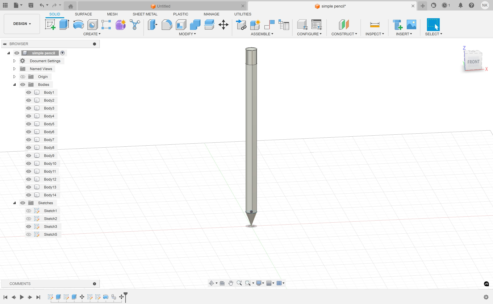 A single body in the shape of a pencil, standing on its tip. The dimensions and edges of this pencil are much more precise to how a real pencil would look.The first step was to use the sketch tool to draw a 2D polygon - a hexagon for the body - to then extrude upwards into a prism. As Fusion gave more dimensional control, I took advantage of this by creating a scale replica of a real pencil that I measured with a ruler: a hexagon 5mm in diameter, extruded to 170mm in height. Then, I sketched a circle with equal diameter to the hexagon’s points on the ceiling of the hexagonal prism, and extruded it downwards to 15mm (matching the length of the eraser and ferrule of my real pencil). Finally, the pencil tip took a less intuitive approach. Instead of sketching on the Z plane (the bed), I sketched a 90° triangle on the X axis, and then revolved it on the Z axis to create a 3D cone, thus replicating the 2D object in a circle rather than a flat up/down stack as with the prior prisms.
This process in which two similar objects were created through quite different means showed me the difference between these platforms, and the different advantages offered by either. Tinkercad was much more helpful for visualizing an object and “playing around” with the available shapes, but failed to execute some technical tasks that would seem intuitive to a human (i.e. rotating a pyramid sideways). Fusion was more highly technical, allowing more precise control of shapes, but would be incredibly unwieldy to conceptualize basic drafts.
The Pen Holder Remix 1: A Roundabout Tinkercad Approach
The next phase of this project involved selecting a publicly available 3D print file from the internet, “remixing” it (changing some part of its design for a different use), and then printing it. This part was much more fun and educational in my experience as I felt the real-world differences between prints made with Tinkercad and with Fusion, and worked with much more complex shapes than the previous work with simple polygons.
I found and chose this design for a pen holder: https://thangs.com/designer/GenericNub/3d-model/Desk%20Organizer%2FPen%20Holder-1339773. I figured that this design struck a golden zone in design: incredibly simple and easy to make, with its concentric circles and symmetrical quadrants, yet highly useful as a desk organizer. My idea was to improve its design by reducing its simple perfection a bit and give the design more functional diversity. By taking out an inner wall and shortening down half of the outer wall, it would have less excess in pen-holding space, and would have a dish to store smaller items that wouldn’t need to be fished out of a deep pen-holding container.
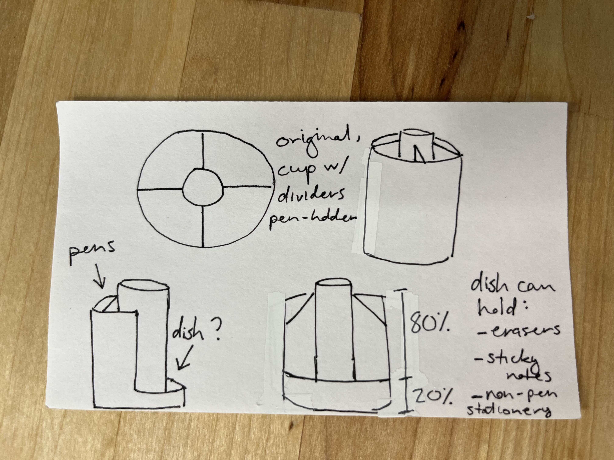 A notecard sketch, with notes, of what I was imagining in changing this pen holder. While exact dimensions weren't something I knew how to exert control over, I did want to be able to scale the height of the "dish" wall against the taller "pen" wall.In Tinkercad, the best way to delete part of a structure is with a negative polygon, which cuts into the space it would occupy in a positive polygon it is joined with. The familiar challenge of restricted choices in Tinkercad resurfaced here: I could not find any shapes that were better tailored to the curve of only half of the pen holder’s outer wall than manually placing, and then resizing, stacked cylinders. The subsequent monstrosity of inefficiency is pictured below.
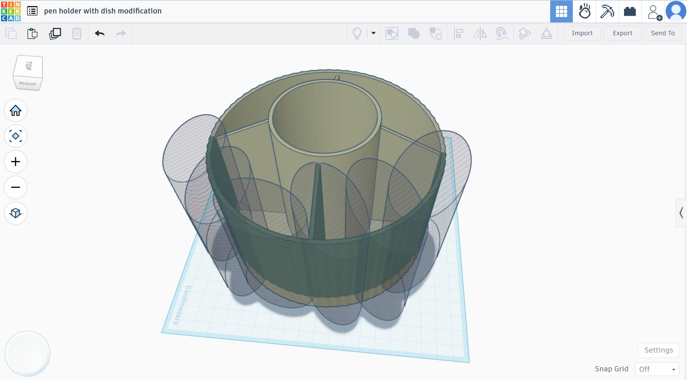The resulting print from this approach revealed interestingly real consequences of this inefficient approach. Using this method, I had to approximate through my best sight-based guess where to place the negative space until it looked “good enough”, but the print showed that I made very small mistakes: the space on the inner circle that would’ve connected to the deleted inner wall showed texture indicating I failed to delete the whole wall, and one of the other inner walls had an anomalous texture indicating that one negative polygon went too far and touched the wall, thus making it just a bit thinner, which the mechanics of the Prusa printer would’ve accentuated.
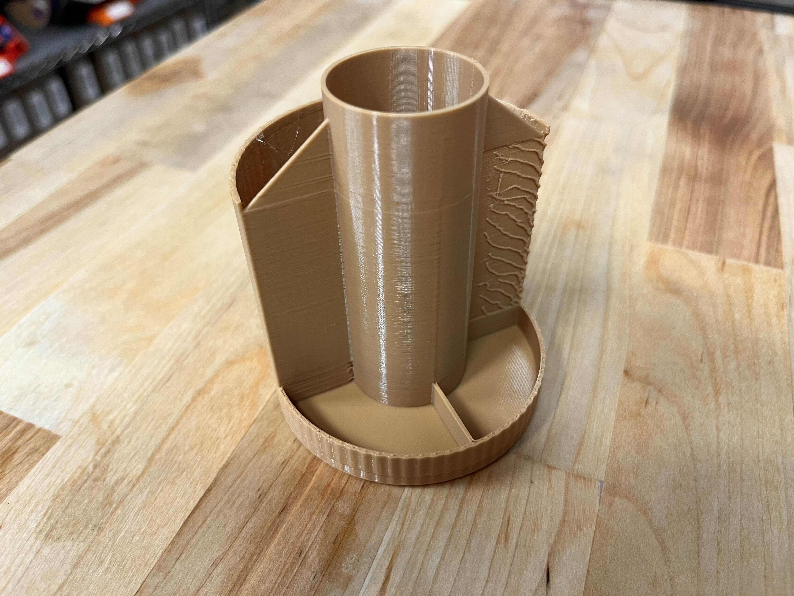 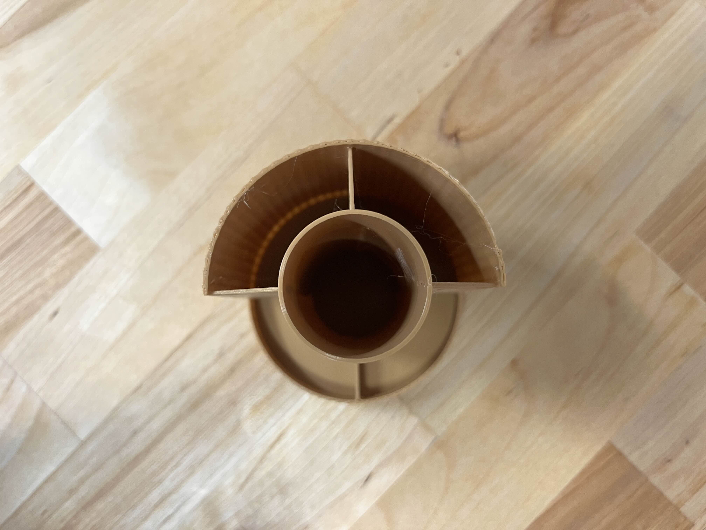 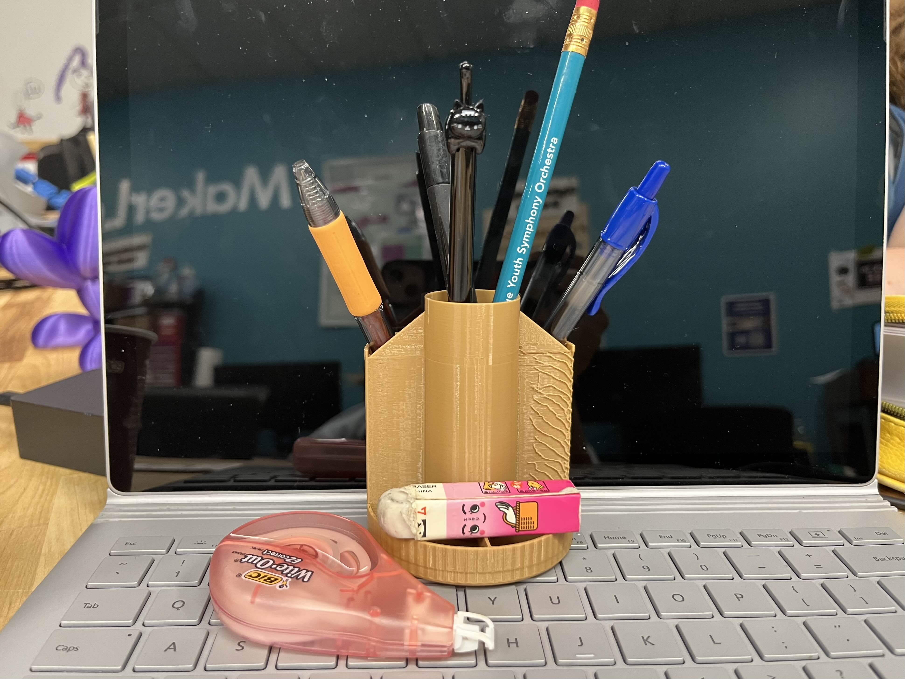 Note the stringy texture on the exposed inner wall, which marks where a part of a negative cylinder would've grazed the pen holder in Tinkercad, too small for me to notice but clearly disruptive enough for the PrusaMini+ to pick up.The Pen Holder Remix 2: An Entirely Different Approach Through Autodesk Fusion
Fusion proved to be the better choice, ultimately, at eliminating human error in editing this design. However, the process was much more complicated, both conceptually and in the amount of steps.
First, the .stl 3D file was not only imported (just like Tinkercad), it had to be converted into a mesh to be recognized as an editable polygon, which was a difficult task for my smaller computer to execute. Then, I used the sketch tool again for a similar purpose as in creating the pencil: this was to extrude a negative (“cut”) polygon downwards from one inner wall and the outer circle’s rim to delete part of the pen holder. These constructs had to be separately deleted, as it was too complex to select them both in one motion. First, one circle was drawn; its radius stretched from the center of the pen holder to the outer perimeter of the inner wall. Then, a second circle was drawn to the inner perimeter of the outer wall. Then, two lines were drawn on either perimeter of one inner divider. This roundabout method created a refined shape that would then extrude into a negative polygon perfectly fitted to just that divider. A similar approach was taken with drawing concentric circles to the inner and outer perimeter of the outer wall, and then two circles (just drawing one, which was then mirrored across the center of the construct) that selected only half of the outer wall. Finally, I selected for the downward negative extrusion to take 80% of the wall, leaving 20% as the rim of my “dish”. This was my way of taking advantage of Fusion’s ability to more precisely select shapes and greater control over math!
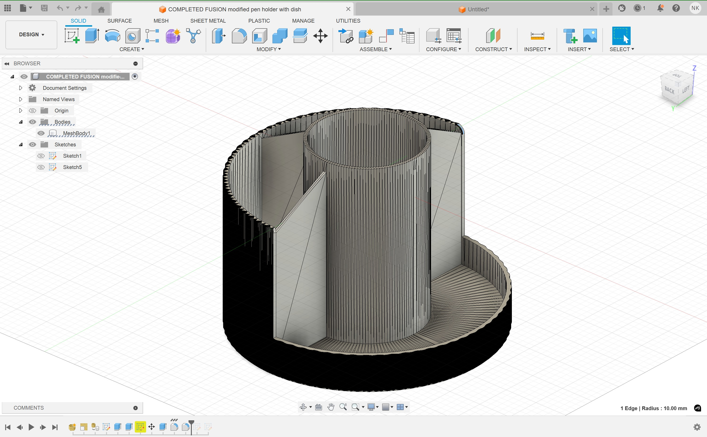 This model much more closely resembles what the final printed body would look like in real life. Note the lack of guesswork resulting in smoother walls, as well as the ability to take away the entire middle wall of the "dish" half, which was not possible in the Tinkercad model.And pictured below is the final printed product of this process on Fusion. The walls are much smoother, and the design overall looks neater and more intentional. It’s visibly much better than the Tinkercad product, due to the lack of guesswork and greater precision in editing.
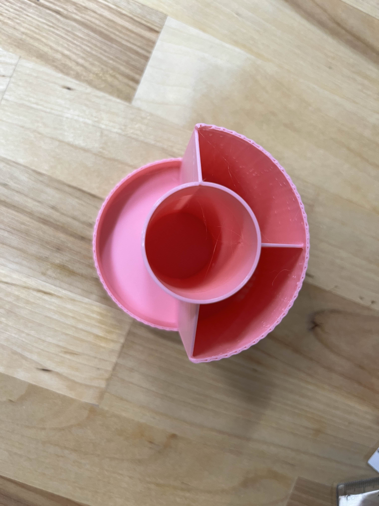 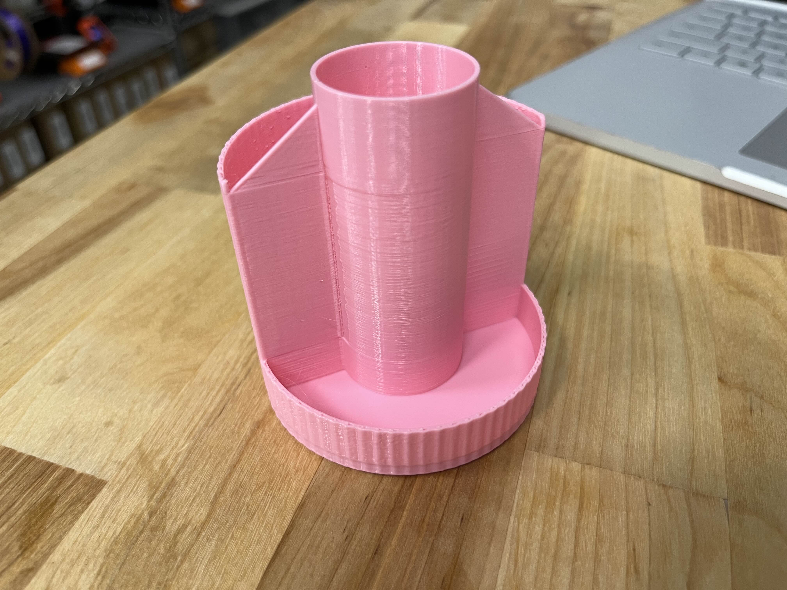 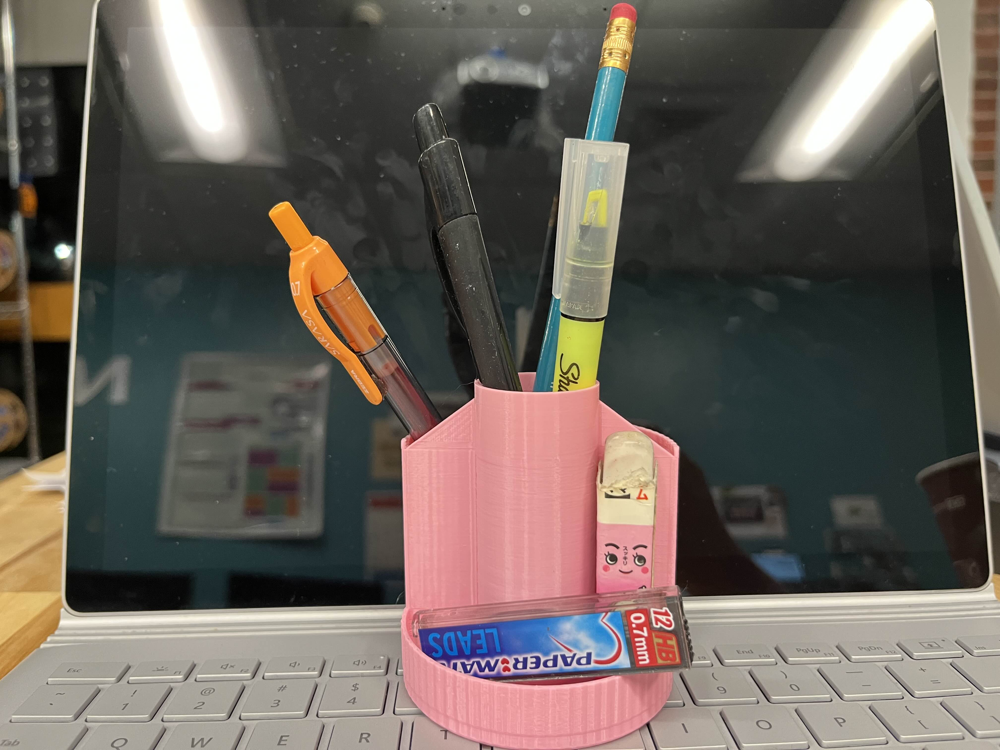
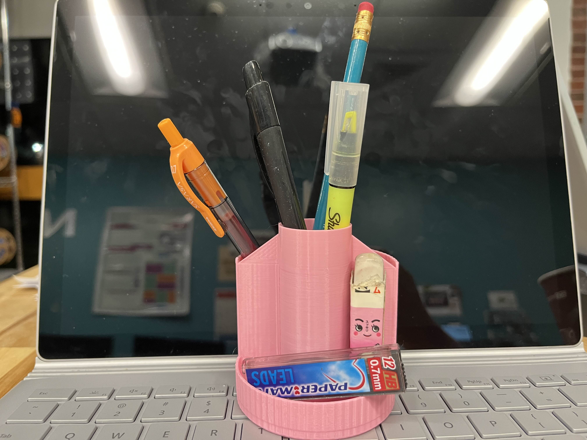
Ultimately, the experience of not just using, but holding the products of these two separate modeling platforms allowed me to intimately understand the different conditions that would lead to calling for different approaches to modeling. I also walked out of this experience understanding basic mechanics in Fusion such as sketching and extruding, which would become central skills in future projects in this course.